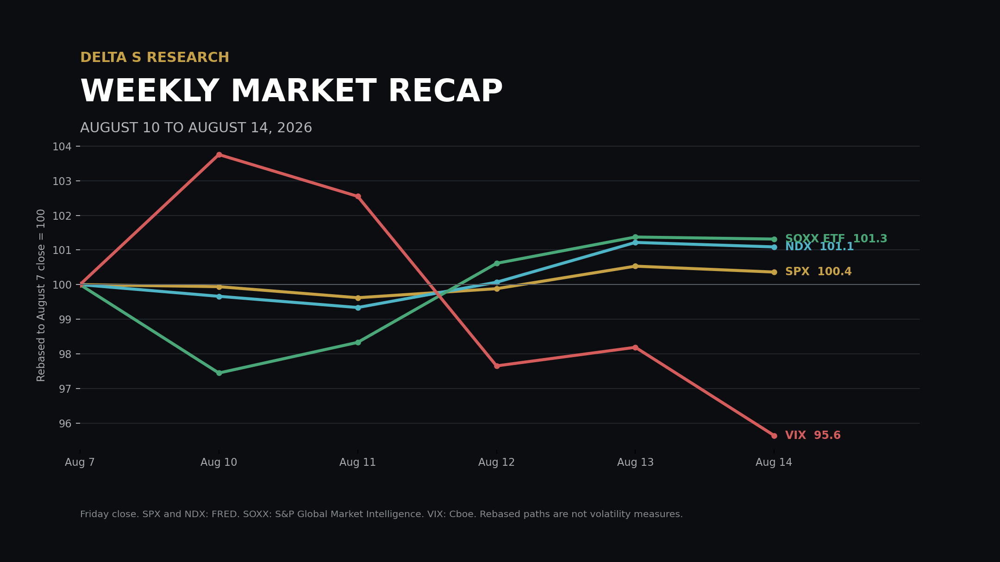
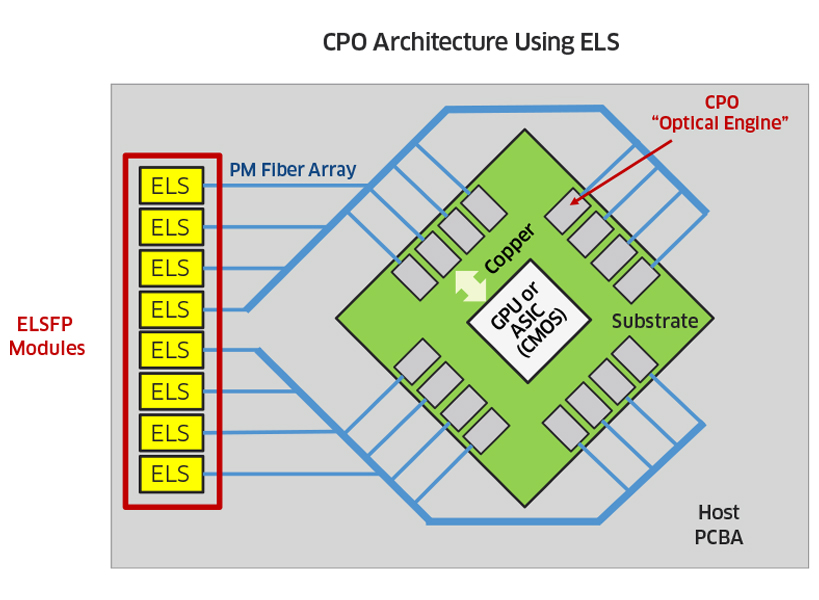
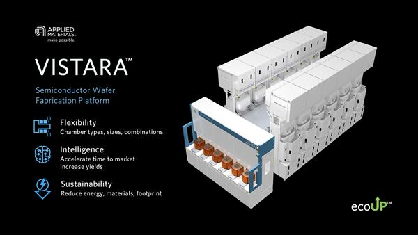

The Week in Five Bullets
- Lower inflation reduced the near-term policy tail, but index gains remained modest. SPX added 0.36% to 7,785.76 and the Nasdaq Composite gained 0.1%, while DJIA declined 0.6%. NDX rose 1.09% and the SOXX ETF gained 1.32%. SPX reached a record close on Thursday, then finished Friday 0.17% lower as retail sales weakened and oil rose.
- July CPI improved without removing the energy problem. Headline CPI rose 0.1% month on month and 3.4% year on year; core CPI increased 0.2% and 2.5%. Shelter rose 0.1% and accounted for roughly two-thirds of the monthly headline increase. Energy fell 1.5% in July but remained 14.7% above a year earlier, limiting the scope for policy repricing.
- The AI chain assigned a higher multiple to optical throughput than to aggregate spending. Lumentum reported USD 1.006 billion of revenue, up 109.3%, with a 50.4% non-GAAP gross margin and USD 1.225 billion to USD 1.275 billion of next-quarter guidance. Its shares rose 14.2%. Applied Materials reported 25% revenue growth to USD 9.12 billion and guided above consensus, yet fell 5.1% after a 108% year-to-date gain.
- CoreWeave showed why backlog and funding must be read together. Revenue rose to USD 2.575 billion from USD 1.212 billion and adjusted EBITDA reached USD 1.51 billion. Backlog was about USD 104 billion before more than USD 25 billion of early third-quarter commitments. Net interest expense reached USD 640 million and the net loss USD 626 million; a USD 35 billion to USD 39 billion capex plan raises both capacity and execution risk.
- Oil and the long end resisted the volatility market's calmer message. WTI settled at USD 82.40 per barrel, up 5.4% for the week, and Brent at USD 88.52, up about 6.0%. The 10-year and 30-year Treasury CMT yields rose 3 and 6 basis points to 4.68% and 5.25%, while VIX fell 4.36% to 14.25. Equity options priced a quieter distribution even as energy supply and term premium kept macro convexity alive.

The Week’s Dominant Narrative
- The market accepted slower inflation, but not a lower operating hurdle. CPI rose 0.1% in July and PPI was unchanged, allowing SPX to close at a record on Thursday. The index gained only 0.36% for the week. Company reactions depended on whether revenue growth improved margins and cash conversion, not merely on beating estimates.
- Lumentum converted bandwidth scarcity into growth and margin. Revenue rose 24.5% sequentially and 109.3% year on year to USD 1.006 billion. Components increased 102.7%, systems 122.6%, and non-GAAP operating margin reached 36.6%. Next-quarter margin guidance of 39.5% to 40.5% suggests 1.6T modules, optical switching and higher-power lasers are moving into profitable volume.
- CoreWeave converted contracted demand into scale, but not yet low-cost earnings. Revenue more than doubled and adjusted EBITDA margin was 59%, yet adjusted operating margin fell to 5% from 16%. Interest expense of USD 640 million was five times adjusted operating income. Backlog improves visibility, but equity value still depends on financing, delivery and utilization arriving in sequence.
- Applied Materials confirmed demand while exposing expectation risk. Fiscal third-quarter revenue rose 25% to USD 9.12 billion and adjusted EPS reached USD 3.50. Fourth-quarter revenue guidance centered on USD 10.25 billion, USD 710 million above market consensus, and adjusted EPS guidance centered on USD 4.02. A 5.1% share decline therefore reflected the price paid for future growth, not a deterioration in disclosed wafer-fabrication demand.
- The useful AI distinction is between bottlenecks, capacity and financing. Lumentum occupies a bandwidth bottleneck and expands margin as supply scales. Applied Materials supplies future capacity, with strong demand and elevated expectations. CoreWeave owns contracted compute demand while financing the build. One AI factor therefore obscures different cash-flow duration and balance-sheet risk.
What Volatility Markets Priced
- VIX retained a large premium over the path SPX actually realized. VIX closed at 14.25, down from 14.90, while five-day SPX realized volatility was 6.15%. Realized volatility uses the sample standard deviation of five daily log returns multiplied by the square root of 252. The resulting implied-to-realized gap was about 8.10 volatility points, so the weekly carry opportunity was substantial even with CPI, PPI and retail sales on the calendar.
- Nasdaq options also priced more movement than NDX delivered. NDX gained 1.09%, and its five-day annualized realized volatility was 10.78%. VXN closed at 20.72, down 9.20% from 22.82, leaving an implied premium of roughly 9.94 volatility points. The premium compressed as inflation data passed without a large index move, even though single-name earnings gaps remained material.
- Single-name dispersion stayed high because the AI chain did not trade as one factor. Lumentum rose 14.2% after results while Applied Materials fell 5.1%, creating a 19.3 percentage-point spread between two beneficiaries of the same infrastructure cycle. CoreWeave rose more than 14% in extended trading after its report, while Friday weakness in Broadcom reached 5.9%. Index volatility netted these reactions; concentrated portfolios could not.
- Low at-the-money volatility coexisted with demand for tail shape. VIX ended at 14.25 while Cboe SKEW closed at 138.36, up 2.97% on Friday. The combination implies inexpensive central outcomes and a costlier downside tail. Oil supply and concentrated AI earnings can still change correlations abruptly.
- Rates and equity volatility diverged at the weekly close. VIX fell 4.36%, but the 10-year CMT rose 3 basis points and the 30-year rose 6. Equity options responded to quiet realized moves; the long end retained inflation, supply and fiscal term premium. Low VIX did not validate duration as a complete equity hedge.

Cross Asset Signals
- The Treasury curve steepened at the long end despite softer inflation. The 10-year CMT rose from 4.65% to 4.68% and the 30-year from 5.19% to 5.25%, widening 10s30s by 3 basis points to 57. A 30-year auction cleared at its highest average yield since 2001. Near-term Fed relief did not remove duration supply or inflation compensation.
- Oil reversed most of the prior week's relief. WTI gained 5.4% to USD 82.40 and Brent about 6.0% to USD 88.52 on a futures-settlement basis. Tanker attacks, uncertain U.S.-Iran talks and disruption at Russia's Novorossiysk terminal restored supply premium. July CPI energy fell 1.5%, while the August input is moving higher.
- The dollar softened as policy probabilities moved toward a hold. DXY ended near 99.64, about 0.1% above the prior Friday close but down 0.33% in the final session. CME FedWatch assigned a 67% probability to no September change and 33% to a 25 basis-point increase. Dollar direction therefore remained tied to the difference between softer domestic demand and firmer energy inflation.
- Gold held its bid without receiving help from falling long yields. COMEX gold futures finished near USD 4,380.40 per troy ounce, up 0.91% for the week. The gain accompanied a softer dollar and lower near-term hike probability, while the 30-year CMT still rose 6 basis points. Gold therefore behaved as policy and geopolitical protection rather than a simple nominal-duration trade.
- Bitcoin failed to participate in the record equity close. Bitcoin traded near USD 63,018 at 8:15 PM ET on August 14, about 3.0% below the comparable prior-Friday reading. The asset remained inside the roughly USD 62,000 to USD 66,000 summer range as ETF demand was offset by miner and corporate selling. Its muted reaction to CPI reinforces the distinction between lower rate pressure and renewed crypto-specific demand.
- Fund flows favored diversification away from technology concentration. Global equity funds received USD 18.62 billion through August 12, including USD 2.58 billion into U.S. funds, while technology recorded USD 1.70 billion of outflows after six inflow weeks. Bond funds attracted USD 18.01 billion and money-market funds USD 28.41 billion. Risk appetite remained, but AI exposure was not extended unconditionally.
- Retail demand became the next macro constraint. July retail sales fell 0.6% to USD 763.6 billion after a 0.2% June increase, and preliminary August consumer sentiment fell to 51 from 55.2. Weak consumption reduces immediate policy pressure, but it also challenges revenue estimates for discretionary and housing-linked companies. Next week's large-retailer reports will test that transmission directly.
Structural Fragilities
- The disinflation trade depends on an energy input that has turned. July energy CPI fell 1.5%, helping headline CPI rise 0.1%; WTI then gained 5.4%. Benign August inflation requires the oil move to remain temporary or to be absorbed by margins. Neither condition was established Friday.
- AI backlog is not equivalent to free cash flow. CoreWeave reported about USD 104 billion of backlog and more than USD 25 billion of commitments, but also USD 640 million of quarterly net interest expense. Revenue visibility requires financed capacity to be delivered and consumed on schedule. Delays can put debt service before cash generation.
- A low VIX still embeds earnings-correlation risk. VIX at 14.25 accompanied SPX realized volatility near 6.15%, while Lumentum and Applied Materials produced a 19.3-point return gap. Short index volatility assumes company-specific moves continue to offset. A common AI capex or margin revision would raise correlation and weaken that offset.
- Long-duration hedges remain exposed to an inflationary shock. The 30-year CMT rose 6 basis points in a week when SPX gained and VIX declined. If the next equity drawdown comes from oil or term premium rather than weaker growth, Treasuries and long-duration equities can lose value together. The portfolio hedge depends on the source of the shock, not only on its size.
- Index inclusion can create mechanical demand without resolving valuation. Reddit rose almost 13% after its announced addition to SPX, and an external estimate put required index buying at 16.7 million shares, nearly three times its post-IPO average daily volume. The flow is price-insensitive around the effective date, but it is finite. Performance after completion again depends on earnings and free float rather than index membership itself.
- VIX closed at 14.25 while the 30-year Treasury CMT rose to 5.25%; the market priced a narrow center and kept paying for the edges.
What We Are Watching Next
- Tuesday, August 18, 8:30 AM ET: July housing starts, building permits, and import and export prices. Housing tests construction restraint; import prices test tariff pass-through.
- Tuesday, August 18, 9:00 AM ET: Home Depot second-quarter earnings call. Ticket size and professional sales will test housing-linked discretionary demand.
- Tuesday, August 18, 9:15 AM ET: July industrial production and capacity utilization. The release separates data-center investment from softer household demand.
- Tuesday, August 18, 10:00 AM ET: July pending home sales. Contracts test whether a 6.7% mortgage rate still restrains turnover.
- Wednesday, August 19, 8:00 AM ET: Target second-quarter earnings call. Comparable sales and inventory test July's 0.6% retail decline.
- Wednesday, August 19, 2:00 PM ET: Minutes of the July FOMC meeting. The record will clarify the three votes for an immediate hike.
- Thursday, August 20, 7:00 AM CT: Walmart second-quarter earnings call. Category mix and margins will test whether consumption weakness is broad.
Sources and References
- U.S. market closes, weekly returns, breadth and CME policy probabilities: Reuters, August 14
- SPX daily closes: FRED S&P 500
- NDX daily closes: FRED Nasdaq 100
- SOXX ETF daily closes: StockAnalysis, sourced from S&P Global Market Intelligence
- VIX spot and methodology: Cboe
- VXN closes: Cboe Nasdaq 100 Volatility Index via FRED
- Cboe SKEW close: Yahoo Finance market data
- July 2026 CPI: U.S. Bureau of Labor Statistics
- July 2026 PPI: U.S. Bureau of Labor Statistics
- July retail sales: U.S. Census Bureau and market context: Reuters
- Daily 10-year and 30-year CMT yields: U.S. Treasury
- WTI and Brent weekly settlements: Reuters, August 14
- Lumentum fiscal fourth-quarter 2026 results and guidance: Lumentum Investor Relations
- Lumentum post-results share move: MarketWatch
- CoreWeave second-quarter 2026 results: CoreWeave Investor Relations
- CoreWeave capex plan and post-results move: Reuters
- Applied Materials results, guidance and share move: Reuters
- Gold weekly futures performance: Wall Street Journal
- DXY close and policy context: Trading Economics
- Bitcoin range and flow balance: CoinDesk
- Global and U.S. fund flows through August 12: Reuters
- Reddit index inclusion and estimated index demand: Reuters
- Home Depot earnings schedule: Home Depot Investor Relations
- Target earnings schedule: Target Investor Relations
- Walmart earnings schedule: Walmart
- Housing starts schedule: U.S. Census Bureau
- Import price schedule: U.S. Bureau of Labor Statistics
- Federal Reserve meeting minutes calendar
- Strait of Hormuz current flows and bypass capacity: U.S. Energy Information Administration